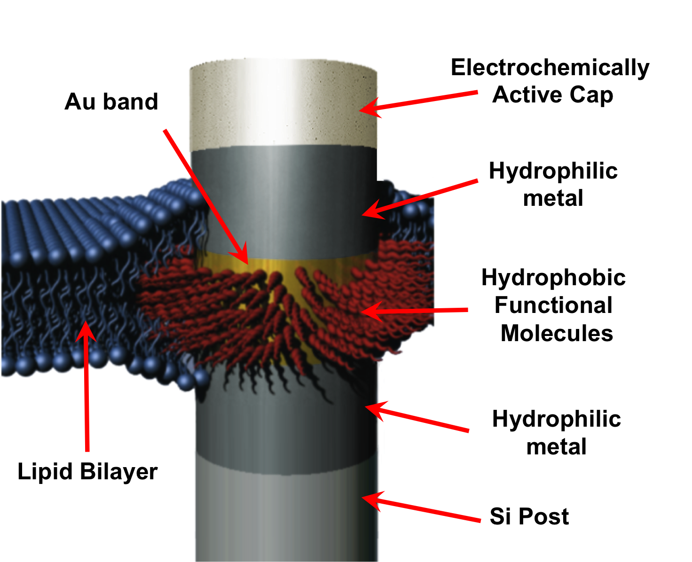

Measuring and controlling the electronic and ionic flux across cell membranes is critical to designing neurally integrated prosthetics, screening pharmaceuticals for electrophysiological side effects, and investigating ion channel and neural network behavior. However, no existing techniques currently provide both the high sensitivity of pipette-based patch clamping and long-term, massively parallel measurements.
The current "gold standard" instrument for electrophysiological measurements is the pipette-based patch clamp. Although these are capable of high quality data collection for single cells over short durations, they lead to cell death in less than two hours and are not amenable to fabrication into large arrays. Other techniques, including extracellular electrode arrays and solid-state intracellular electrodes, provide better cell viability at the expense of sensitivity. Extracellular electrode techniques suffer from low sensitivity and poor electrical stimulation because they rely only on capacitive coupling with the cell membrane. Solid-state intracellular patch clamps enable direct current injection without rapid cell death by dialysis, but form a poor seal with the lipid bilayer that results in leakage current and poor signal to noise ratio. Therefore, for accurate patch clamp measurements, it is essential to have an intracellular probe that forms a tight electrical junction with the lipid bilayer.
Our group has overcome this key barrier by demonstrating a new approach to forming this important seal, allowing direct, non-destructive electrical access into the cell membrane. Instead of using a homogeneously functionalized probe, we have developed a “stealth probe” architecture that contains a narrow 5-10nm thick hydrophobic band around its circumference. Upon membrane penetration, this band fuses to the hydrophobic lipid tails of the membrane, forming a giga-ohm seal, enabling long-term cell viability and high-quality electrical recording.
We have designed a device that harnesses these nanostructures in a chip-based platform consisting of 96 individually addressed stealth electrodes for intracellular electrical measurement. This stealth patch clamp array is fabricated using standard lithographic techniques on a silicon-on-insulator (SOI) substrate. Each of these probes is made up of a Si post capped with a metallic stack including a thin Au banded “stealth” structure, topped with an electrochemically active cap of iridium oxide, providing an intracellular source of faradaic current. Each device is capable of high quality data collection, long-term cell viability, and parallel measurements of both stimulated neurons and downstream activity through a cultured network, and the platform is amenable to mass production using standard semiconductor processing techniques.